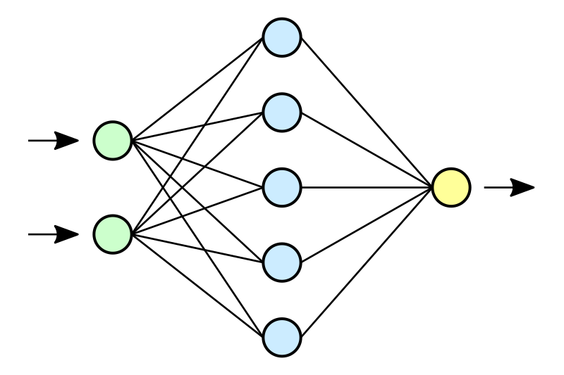

O Problema e o Público Alvo
A situação na garagem do campus IFMG Ouro Branco tem se mostrado um desafio persistente. Atualmente, cada professor possui um controle para acessá-la, o que tem levado a uma série de inconvenientes e problemas de segurança. A necessidade de distribuir múltiplos controles é incômoda e propícia a erros, como o risco de um usuário fechar o portão enquanto outro ainda está passando por ele. Diante desse cenário, uma solução inovadora foi concebida: a implementação de um sistema baseado em reconhecimento de placas veiculares por meio de câmeras. Com essa abordagem, os usuários não precisariam mais carregar consigo controles físicos, eliminando assim a necessidade de distribuição e manutenção desses dispositivos. Além disso, essa solução oferece um nível adicional de segurança e conveniência ao abrir automaticamente o portão apenas para os veículos cadastrados no sistema.
Para evitar possíveis incidentes, o sistema contará com travas de segurança que impedirão o fechamento do portão enquanto houver alguém passando por ele. Isso garantirá a integridade física dos usuários e mitigará qualquer risco de acidentes causados pelo fechamento prematuro do acesso. Essa proposta não apenas resolve os problemas atuais da garagem, mas também representa um avanço significativo em termos de tecnologia e segurança para a comunidade do campus IFMG Ouro Branco. Com essa solução, espera-se não só melhorar a experiência dos usuários, mas também promover um ambiente mais seguro e eficiente para todos os envolvidos.
Métodos e Tecnologias
Para a implementação da solução serão utilizados os seguintes métodos e tecnologias:
- 
Rede
Neural
Será utilizada uma rede neural para indentificar as placas de veículos presentes na imagem retirada da câmera. -
 Python
Python
Como a rede neural é programada em Python, este será usado durante a codificação. -
 Tecnologias para Desenvolvimento
Web
Tecnologias para Desenvolvimento
Web
Deverá ser desenvolvido um site para divulgação do projeto e para cadastrar novas placas, além de poder ser usado para deixar o portão forçadamente aberto. - Banco de Dados
Para armazenar as placas cadastradas e outros dados se fará necessário um banco de dados. -
 Outras tecnologias
Outras tecnologias
projeto ainda se encontra em seu estágio inicial e por isso as tecnologias a serem usadas ainda não foraam decididas em sua totalidade e se faz necessário um estudo detalhado para que isso esteja mais claro.